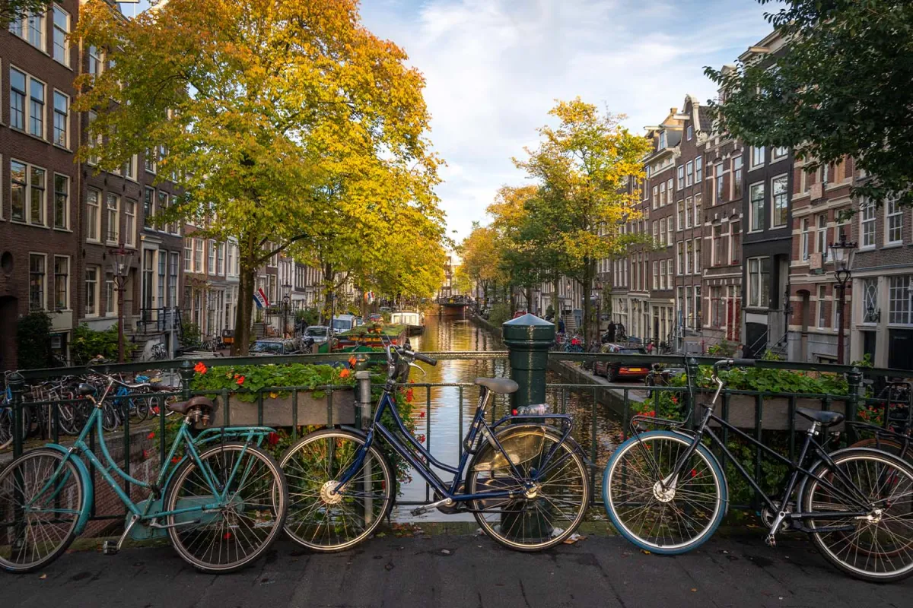
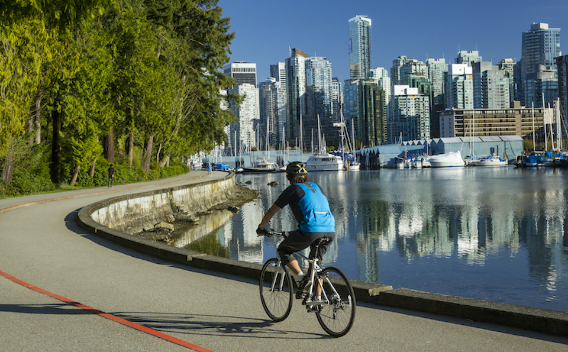
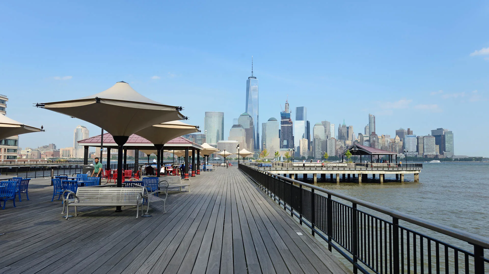

Amsterdam, Netherlands
Discover the bike-friendly city of Amsterdam, where bicycles outnumber cars. Ride along picturesque canals, visit world-class museums, and soak in the laid-back atmosphere of this vibrant city.

Barcelona, Spain
Barcelona is another great city to bike in. Cycling through the city allows you to explore the lively streets. Cycle along the iconic beachfront boardwalk, explore the historic Gothic Quarter, and marvel at the architectural wonders of Antoni Gaudí while enjoying the Mediterranean sunshine.

Vancouver, Canada
Vancouver has a great outdoor scenary for biking. It is a city surrounded by stunning natural beauty. Hop on a bike and explore Stanley Park, pedal along the scenic Seawall, and discover the city's diverse neighborhoods and cultural attractions.
My Personal Favorite Cities

Jersey City, New Jersey
The Downtown Area of Jersey City is one of my personal favorites to bike through. Not only is it local to me but the view of New York City is so breathtaking and enjoyable while biking along the pier. The Statue of Liberty and Water's Soul is one of the many things I like to bike by.
You can also find bike rentals along the pier, which I enjoy using.

Chicago, Illinois
Chicago is another one of my favorites. It is similar to biking in New York City, just less of a crowd. There is a bunch of areas to sight see. It is also the only other area of biked through. Until I get to bike ride in another part of the world, this is my second favorite spot.
It is also beginner friendly as it has bike rentals around the city for people who do not own bikes.